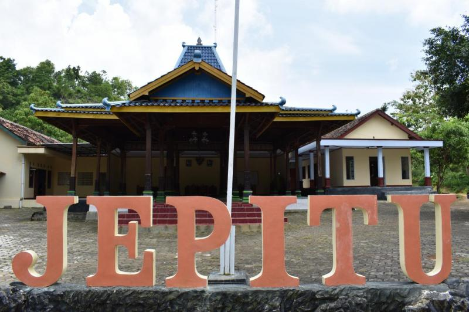

Sejarah Kalurahan Jepitu

Kalurahan Jepitu memiliki sejarah panjang yang dimulai dari zaman penjajahan
hingga menjadi salah satu kalurahan yang berdiri kokoh di masa kini. Berdasarkan catatan sejarah,
Kalurahan Jepitu didirikan oleh para tokoh masyarakat yang memiliki visi untuk
membangun komunitas yang mandiri, harmonis, dan berlandaskan kearifan lokal. Para pendiri kalurahan
memiliki semangat kebersamaan yang tinggi untuk menghadapi tantangan zaman, terutama dalam masa-masa
sulit penjajahan.
Awalnya, wilayah ini terdiri dari beberapa dusun kecil yang tersebar di antara bukit-bukit dan
lembah. Karena lokasi geografisnya yang strategis dan subur, Kalurahan Jepitu berkembang menjadi
pusat komunitas agraris yang bergantung pada pertanian sebagai mata pencaharian utama. Aktivitas
bercocok tanam, beternak, dan memanfaatkan sumber daya alam menjadi ciri khas kehidupan masyarakat
setempat.
Dalam perjalanan waktu, berbagai peristiwa penting turut membentuk identitas Kalurahan Jepitu
seperti sekarang. Salah satunya adalah perjuangan masyarakat dalam mempertahankan tanah mereka
selama era kolonial. Selain itu, program-program pembangunan yang digagas setelah kemerdekaan
Indonesia telah memberikan dampak positif pada infrastruktur dan kesejahteraan masyarakat Jepitu.
Tradisi dan budaya yang diwariskan oleh para pendahulu masih tetap dilestarikan oleh masyarakat
hingga saat ini. Kegiatan adat seperti upacara bersih desa, kenduri, dan pertunjukan seni
tradisional menjadi bagian tak terpisahkan dari kehidupan sehari-hari. Kalurahan Jepitu juga dikenal
akan keramahan warganya yang tetap menjaga nilai-nilai gotong royong, meski menghadapi modernisasi.
Kini, Kalurahan Jepitu terus bertransformasi dengan memanfaatkan teknologi dan inovasi dalam
pembangunan desa digital. Namun, di balik kemajuan ini, masyarakat Jepitu tetap menjaga identitas
budaya mereka, menjadikan kalurahan ini sebagai perpaduan harmonis antara tradisi dan kemajuan.
Kalurahan Jepitu adalah bukti bahwa semangat kebersamaan dan cinta tanah air dapat membawa sebuah
komunitas melangkah maju tanpa melupakan akar sejarahnya.